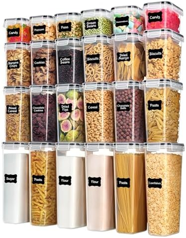
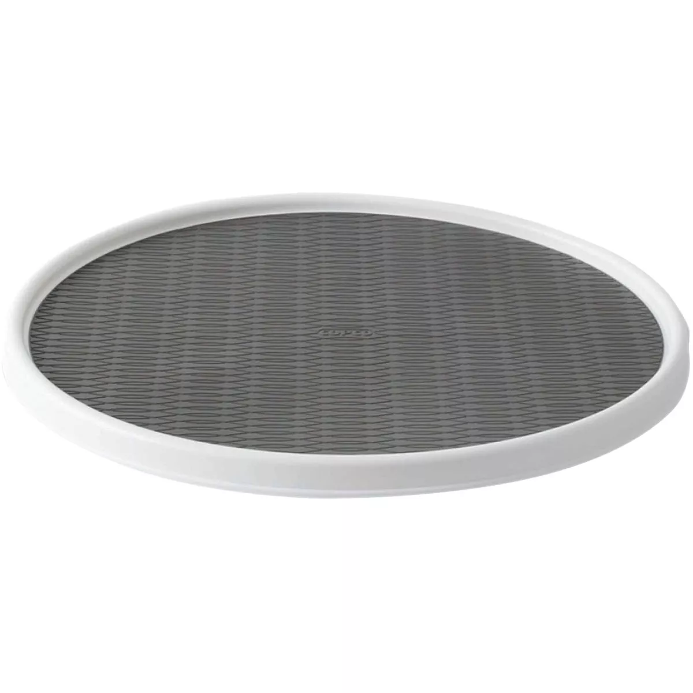
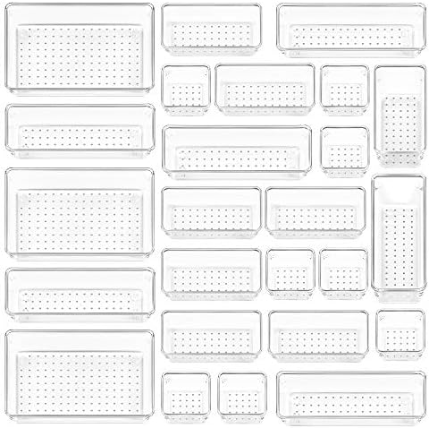
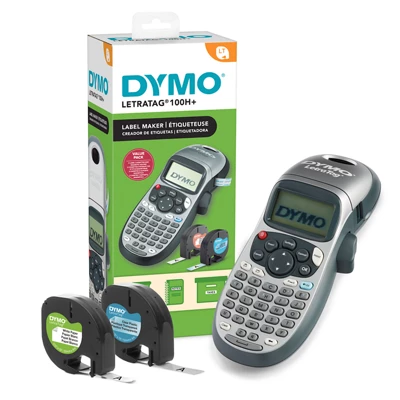

Stocking Stuffers for Home: 5 Small Gifts That Actually Get Used

Most stocking stuffers are cute for a morning and forgotten by January. These five are different. Each one fixes a small daily annoyance: a crowded closet, a messy pantry, a lost jar at the back of a cabinet, a junk drawer, or bins nobody can tell apart. They are small, they are useful, and they fit in a stocking or on top of a wrapped box.
As an Amazon Associate I earn from qualifying purchases.
1. Amazon Basics slim velvet hangers, 50-pack: for a closet that has run out of room
The problem is a closet rod full of bulky plastic hangers. Slim velvet hangers take up half the space, so the rod gains room for ten more garments. Clothes stay put instead of sliding off onto the floor.
Give this to someone who just moved, or who complains the closet is full while half the clothes are on a chair. It goes in the bedroom closet, and it works the day it arrives.
2. Vtopmart 24-piece airtight containers: for a pantry full of half open bags

The problem is flour, pasta and cereal living in half open bags that go stale. Twenty four clear containers in four sizes with four side locking lids and a silicone seal fix that in one afternoon. She can see what is left without opening every box.
Give this to someone who cooks most nights, or to a new homeowner setting up a first pantry. It goes on the pantry shelf. On Amazon it holds 4.7 out of 5 stars from more than 28,000 ratings.
3. Copco 18-inch lazy Susan turntable: for the deep cabinet where jars get lost

The problem is a deep cabinet where jars hide at the back and get bought twice. A turntable fixes it. Spin, grab, done. The non skid surface and raised rim keep jars from sliding off when it turns.
Give this to someone with a small kitchen, or to a parent who keeps spices and sauces in one crowded cupboard. Measure the shelf first, it is eighteen inches across. On Amazon it holds 4.7 out of 5 stars from more than 55,000 ratings.
4. Vtopmart 25-piece drawer organizers: for the junk drawer everyone pretends not to see

The problem is one drawer where batteries, keys, tape and pens live in a pile. Twenty five clear trays in four sizes turn it into a drawer where everything has a place. Non slip pads keep the trays still when the drawer slams.
Give this to someone who works from home, or to anyone with a kitchen drawer that sticks. It goes in the kitchen, the desk, or the bathroom. It is the number one best seller in clothes drawer organizers on Amazon, with 4.7 out of 5 stars from more than 49,000 ratings.
5. DYMO LetraTag 100H Plus label maker: for bins nobody can tell apart

The problem is a shelf of neat bins with no labels, so the system falls apart in a month. Labels are what make a system stick. This little maker prints in five font sizes and seven print styles, and it prints on colored labels.
Give this to the organizer in the family, or to someone who just bought bins and has nothing to label them with. It is also the most giftable piece here: a gadget, not a container. It comes with the maker and two label cassettes.
How to choose
Start with the room that bothers her most. Closet full means hangers. Pantry messy means containers. Cabinet deep means the turntable. Drawer stuck means organizers. Bins with no labels means the label maker. One pick is a fine stocking gift. Two picks together make a small kit: hangers and organizers for a bedroom, containers and the turntable for a kitchen, organizers and the label maker for a desk.
See all five as part of the full starter kit in Home Organization Ideas.
Find us on Pinterest
Home Organization Ideas (@everydaytidy) on Pinterest
As an Amazon Associate I earn from qualifying purchases.